{kind=link}

Bevor wir mit der Beschreibung von Scribus ins Detail gehen, ist es vielleicht nützlich, erst einmal ein Gefühl dafür zu bekommen, wie das Programm funktioniert. Dazu wird im folgenden als Beispiel gezeigt, wie man für den Katalog einer internationalen Rembrandt-Ausstellung ein einfaches Titelblatt gestalten könnte. Um die einzelnen Schritte nachzuvollziehen, benötigt man:
Die folgende Abbildung zeigt, wie das Endergebnis aussehen sollte:
|
Bevor Sie loslegen, sollten Sie die für das Projekt passende Farbpalette auswählen. Stellen Sie sicher, daß noch kein Dokument geöffnet ist, und wählen Sie Bearbeiten > Farben... Der folgende Dialog zeigt die Standardpalette »Scribus Basic«, die voreingestellt ist. Für unsere Zwecke benötigen wir die mit »X11« bezeichnete Palette, die man im Dialog unter »Farbpaletten« auswählen kann.
| 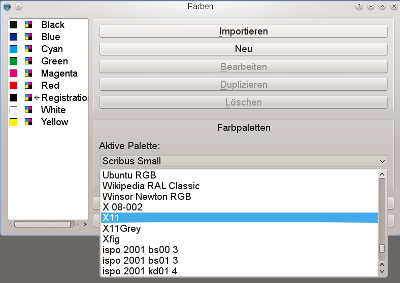 | 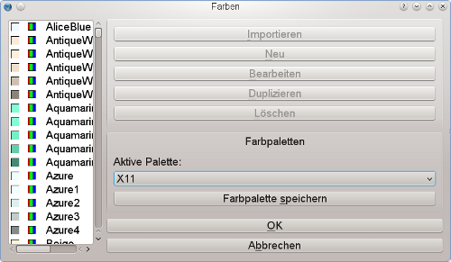 |
Wahrscheinlich sind Sie damit vertraut, wie eine Textverarbeitung verfährt, wenn man eine neue Datei erstellt: Das Programm erzeugt eine neue Seite, und man kann sich gleich an die Arbeit machen. Dieses Verfahren, wonach einfach eine neue Seite erzeugt oder hinzugefügt wird, sobald sie benötigt wird, funktioniert so bei Scribus nicht (und ebensowenig bei anderen DTP-Programmen). Um eine neue Seite zu erzeugen, muß man dies im Programm explizit veranlassen. Denn ein DTP-Programm ist so ausgelegt, daß ein Höchstmaß an Kontrolle über das Layout und den Inhalt des Dokuments möglich ist. Daher wählen wir also Datei > Neu, wonach der folgende Dialog erscheint:
| 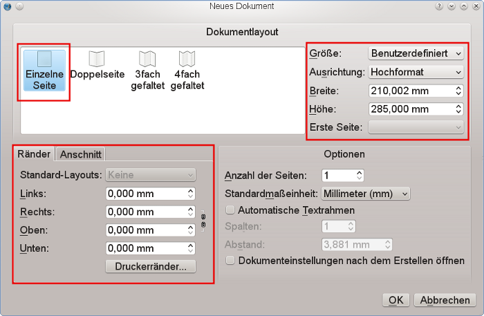 |
Für unsere Titelseite wählen wir das Layout »Einzelne Seite«, und als »Größe« legen wir »Benutzerdefiniert« fest (zu finden ganz am unteren Ende der entsprechenden Dropdown-Liste). Den vorgegebenen Wert für die »Höhe« ändern wir auf 285 mm. Da die Titelseite keine Ränder aufweisen soll, setzen wir alle entsprechenden Werte auf 0 mm. Die restlichen Voreinstellungen kann man unverändert belassen.
Nach dem Klick auf »OK« erzeugt Scribus eine neue Seite:
| 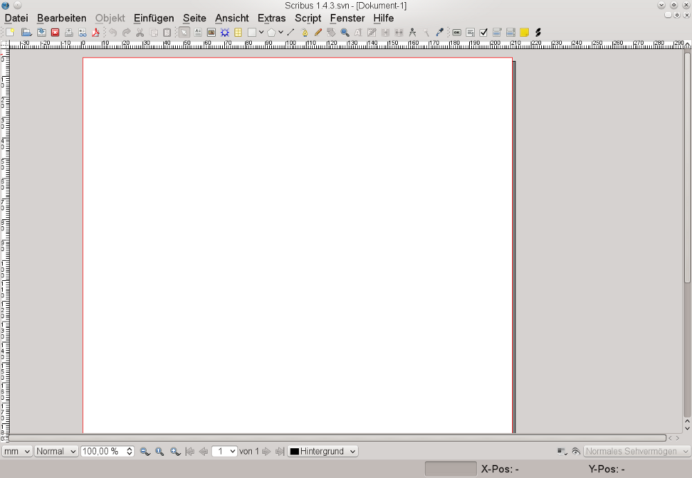 |
Als nächstes benötigen wir für unsere Seite einen grauen Hintergrund. Klicken Sie dazu auf das weiße (oder hellgraue) Viereck in der Symbolleiste, oder drücken Sie einfach auf die S-Taste. Tatsächlich wird beim Drücken dieser Taste kein Buchstabe geschrieben, denn schreiben kann man nur innerhalb einer entsprechenden Umgebung, d.h. innerhalb eines Textrahmens. Da in unserem Fall eine Form (engl. shape) eingefügt werden soll, heißt das Tastenkürzel »S«.
Als Mauszeiger wird nun ein kleines Rechteck angezeigt, mit einem Plus-Zeichen an der oberen linken Ecke. Wenn Sie jetzt die linke Maustauste gedrückt halten und dabei den Zeiger über die Seite ziehen, entsteht beim Loslassen die entsprechende Form. Deren Größe, Position und Farbe sind fürs erste unwichtig, denn diese werden mit dem nächsten Schritt festgelegt.
| 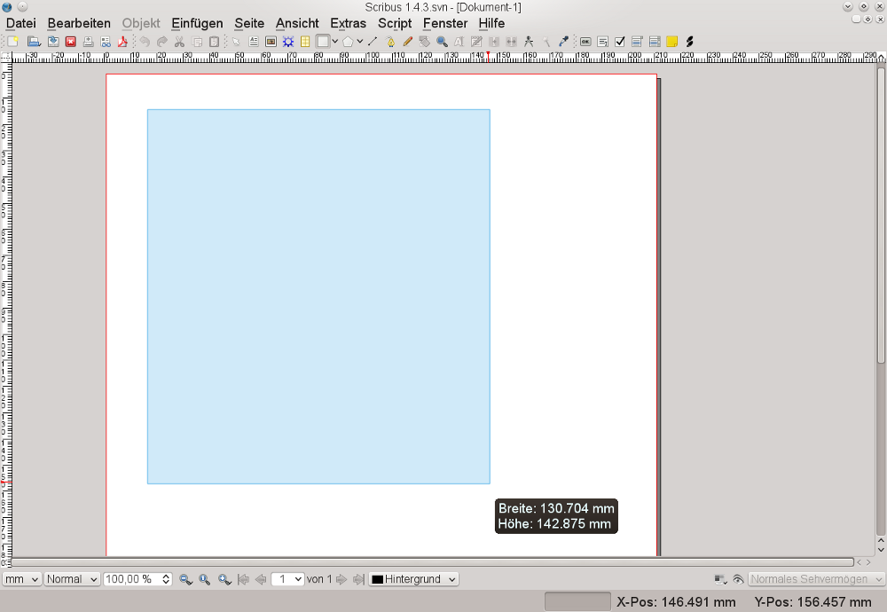 |
Solange Sie nicht irgendwo anders hinklicken, bleibt das neu erzeugte Rechteck ausgewählt, d.h. es ist rot umrandet und verfügt über sogenannte Griffpunkte oder Anfasser an den Ecken und in der Mitte jeder Seitenlinie. Sie können jetzt mit Fenster > Eigenschaften oder durch Drücken von F2 die Eigenschaftenpalette aufrufen – bei Scribus eine Art Allzweckwerkzeug, auf dessen Verwendung wir später noch zurückkommen. Im Moment bleiben wir bei der Standardansicht der Palette, also diejenige, die mit »X, Y, Z« bezeichnet wird. Da es sich vor allem bei komplexeren Dokumenten empfiehlt, für jedes Objekt einen eindeutigen Namen zu vergeben (dadurch kann man es später leichter wiederauffinden und auswählen), vergeben wir hier zunächst den (naheliegenden) Namen »Hintergrund«.
Nun bringen wir das Rechteck auf die Größe der Seite. Dazu erinnern wir uns an die Werte, die wir zuvor für die Seite festgelegt hatten, und fügen sie hier ein. Dabei sollte man allerdings auf das Kettensymbol rechts neben den Eingabefeldern für Breite und Höhe achten. Gibt man die Werte ein, ohne daß die Kette getrennt ist, dann bewirkt die Änderung eines Wert eine proportionale Änderung beim jeweils anderen, und man wird den Eindruck bekommen, daß man sich im Kreis dreht – heraus kommt man nur, wenn man die Kette trennt.
Nachdem nun das Rechteck genau der Seitengröße entspricht, müssen wir noch sicherstellen, daß es mit den Seitenrändern übereinstimmt, indem wir die X- und die Y-Position auf 0,000 setzen. Dazu kann man auch die vorhandenen Werte löschen, durch eine einfache Null ersetzen und danach entweder die Tabulator- oder die Eingabetaste drücken. Scribus wird die Dezimalstellen dann automatisch ergänzen.
| 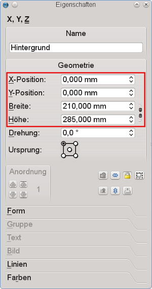 |
Tip: Man kann die einzelnen Schritte wie beschrieben manuell ausführen, jedoch läßt sich dasselbe ab Version 1.4.0 auch auf kürzerem Wege erreichen, nämlich indem man zuerst auf die S-Taste drückt, um das kleine Rechteck zu aktivieren, und gleichzeitig die Umschalttaste gedrückt hält und auf eine beliebige Stelle der Seite klickt: Damit wird unmittelbar ein Rahmen erzeugt, der sich bis zum Rand ausdehnt und in unserem Falle auch mit der Seite deckt, da die Seitenränder auf 0 gesetzt werden.
Als Füllfarbe für derartige Formen wird bei Scribus standardmäßig »Keine« verwendet, was wir hier freilich ändern wollen. Solange das Element noch ausgewählt ist, kann man hierzu sofort erneut die Eigenschaftenpalette aufrufen und dort zum Reiter »Farben« wechseln. Aus der Liste wählen wir dann »Grey41« als Füllfarbe aus.
Bei Scribus verfügen Formen und Rahmen immer über einen Rand. Bei Formen ist die Standardfarbe Schwarz; da wir aber keine gesonderte Farbe für den Rand wünschen, müssen wir auf die Schaltfläche mit dem Pinsel klicken und dann »Keine« (immer ganz oben in der Liste) auswählen.
| 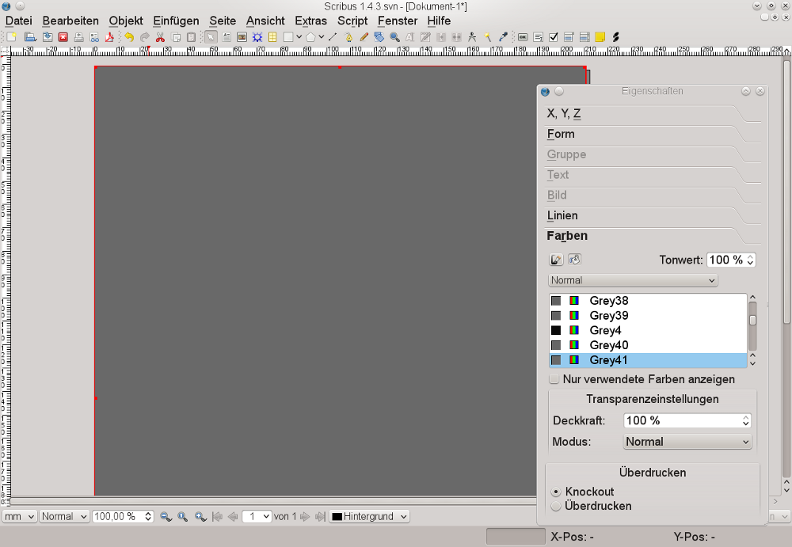 |
Damit ist die Arbeit am Seitenhintergrund abgeschlossen. Um sich gegen unbeabsichtigte Änderungen abzusichern, kann man zur Ansicht »X, Y, Z« der Palette zurückkehren und dort auf die Schaltfläche mit dem Vorhängeschloß klicken. Damit ist der Hintergrund vor Änderungen geschützt.
| 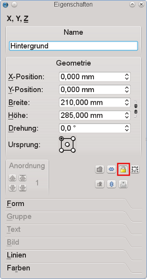 |
Nachdem man den Hintergrund erzeugt hat, kann man sich an die Plazierung des Titelbildes machen. Vielleicht sind Sie es von ihrem Textverarbeitungsprogramm her gewohnt, Grafiken direkt ins Dokument einzufügen, aber bei Scribus werden sie in einen sogenannten Container eingefügt, d.h. in einen Rahmen. Für Abbildungen – oder technisch gesprochen für Bitmap-Grafiken – erzeugt man einen Rahmen, indem man auf die Schaltfläche »Bildrahmen einfügen« klickt oder die I-Taste drückt. Der Bildrahmen wird dann ebenso eingerichtet wie zuvor das Rechteck, und zwar wiederum unter der Ansicht »X, Y, Z« der Palette »Eigenschaften«.
Für diesen Bildrahmen vergeben wir den Namen »Rembrandt1«, und für die Höhe und Breite geben wir die unten im Screenshot gezeigten Werte ein. Unser Bild soll genau in der unteren rechten Ecke plaziert werden. Dies läßt sich leichter erreichen, als es zunächst den Anschein hat: Die Werte für die Breite und Höhe der Seite sind uns bereits bekannt, nämlich 210 mm und 285 mm. Könnten diese also einfach unter »X-Position« und »Y-Position« eingetragen werden? Nicht ganz. Denn zuerst muß man den »Ursprung« des Objekts ändern. Beim Festlegen der Nullwerte für den Hintergrund wurde die obere linke Ecke der Seite als Bezugspunkt angenommen. Da aber das Bild an den Seitenrändern unten rechts ausgerichtet werden soll, muß auch der Ursprung entsprechend abgeändert werden, bevor man die X- und Y-Werte eingibt. Danach aktivieren wir noch die Sperrung für die Größe des Rahmens durch Klicken auf das »Sperren«-Symbol:
| 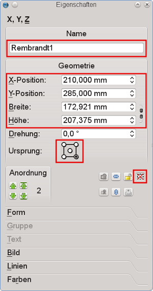 |
Um unser Design etwas eleganter zu gestalten, wollen wir die Abbildung ein wenig abändern. Was am Ende zu sehen sein wird, ist ein schmaler Streifen am linken Rand. Dazu wählen wir aus dem Menü Objekt > Mehrfach duplizieren, denn diese Funktion erlaubt es, das Maß der horizontalen oder vertikalen Verschiebung genau festzulegen. Im Dialog geben wir an, daß wir eine Kopie benötigen, und unter »Horizontaler Abstand« geben wir einen Wert von -6 mm ein, denn die Kopie soll links vom Original plaziert werden:
| 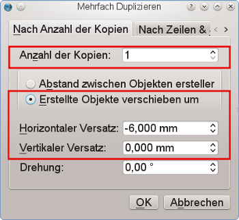 |
Da der neue Bildrahmen eine Kopie von »Rembrandt1« darstellt, müssen wir dessen Größe nicht verändern, und ebenso wird die Plazierung durch den Kopiervorgang festgelegt. Jetzt muß man nur noch den Namen »Rembrandt2« für den Bildrahmen vergeben. Allerdings besteht nunmehr das Problem, daß er sich über dem Rahmen der eigentlichen Titelabbildung befindet; wir müssen ihn also nach hinten verschieben. Bisher haben wir drei Objekte erzeugt, jedesmal über dem vorangegangenen. Daher verschieben wir den zweiten Bildrahmen einfach um eine Ebene nach unten, so daß er sich hinter »Rembrandt1« befindet:
| 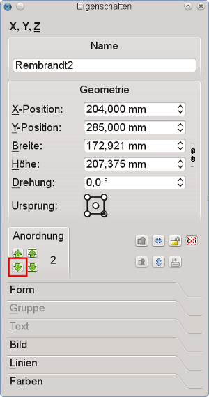 |
Mit dem nun folgenden Importieren von externen Objekten geht es zur eigentlichen Sache: Um das Titelbild in den Rahmen »Rembrandt1« zu laden, klicken Sie mit der rechten Maustauste in diesen Bereich und wählen dann Bild laden…:
| 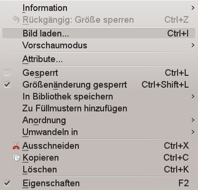 |
Damit wird ein Dialog zur Dateiauswahl geöffnet. Wie es bei Ausstellungen so zu sein pflegt, wird wahrscheinlich eine Unzahl von Abbildungen mit ähnlich erscheinenden Namen im selben Verzeichnis aufgelistet. Dieses Problem ist jedoch schnell umschifft, denn zum Glück bietet Scribus in diesem Dialog eine Vorschau auf die Abbildungen:
| 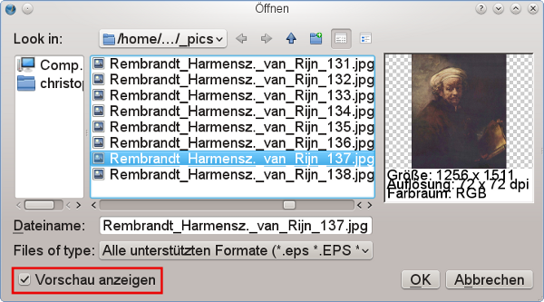 |
Nachdem die passende Datei gefunden ist, öffnet man sie mit einem Doppelklick oder wählt »OK«. Aber nun zeigt sich ein neues Problem:
 |
Wie man sehen kann, deckt sich die Größe des Bildes nicht mit der des Bildrahmens. Hier können wir erneut auf die Palette »Eigenschaften« zurückgreifen, um eine entsprechende Anpassung zu erzwingen. Dazu wechselt man in die Ansicht »Bild« und aktiviert dort »An Rahmen anpassen« sowie »Proportional«. Damit erhält das Titelbild exakt die richtige Größe:
| 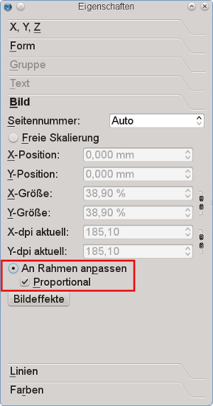 |
Als nächstes benötigen wir in »Rembrandt2« eine Kopie des Bildinhalts von »Rembrandt1«. Dazu klickt man mit der rechten Taste in den »Rembrandt1«-Rahmen und wählt Inhalt > Kopieren, und danach erneut mit der rechten Maustaste auf den sichtbaren Streifen in »Rembrandt2«, um dann Inhalt > Einfügen auszuwählen. Das Ergebnis ist zunächst nicht gerade spektakulär, so daß wir auf »Rembrandt« noch einige Effekte anwenden wollen. Dazu rufen wir erneut das Kontextmenü auf, und wählen dort Bildeffekte:
 |
In diesem Dialog geht es nun einigermaßen zur Sache, denn insgesamt wollen wir das Bild mit vier verschiedenen Effekten bearbeiten: Invertieren, Verwischen (Radius: 7,0), Umwandlung in Graustufen, und Anpassung der Helligkeit auf den Wert -44:
 |
Das Endergebis kann sich schon eher sehen lassen:
 |
Als nächstes wollen wir den Künstler beim Namen nennen. Dazu erzeugen wir einen Textrahmen, entweder durch Klicken auf das entsprechende Symbol in der Leiste, oder durch Drücken der T-Taste (wie man sieht, ähnelt das Verfahren dem weiter oben beschriebenen). Der Rahmen kann durch Ziehen erzeugt werden, ganz wie beim Einfügen einer Form. Er sollte natürlich groß genug sein, um den in der folgenden Abbildung gezeigten Text aufzunehmen. Nach einem Doppelklick in den neuen Rahmen kann man schließlich »REMBRANDT« eingeben. Danach klickt man auf einen anderen Bereich des Dokuments und sogleich erneut in den Textrahmen (jeweils nur einmal), um diesen wieder auszuwählen.
Wir öffnen jetzt wieder die Palette »Eigenschaften« (Tastenkürzel: F2) und dort den Reiter »Text«. Hier wählen wir für Rembrandts Namen als Schriftfamilie »Gentium« aus und stellen die Größe auf 97 pt ein; als Schriftfarbe wird »White« festgelegt. Das Ergebnis sollte wie folgt aussehen:
| 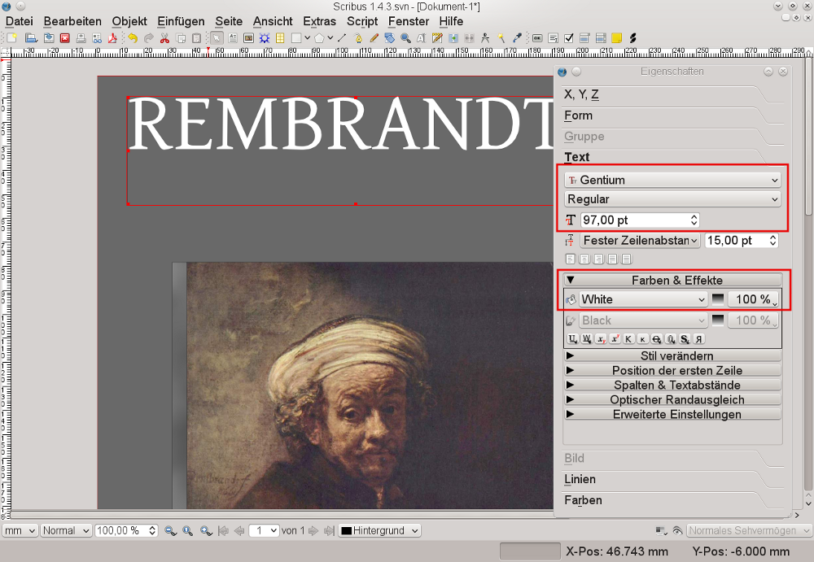 |
Damit kommen wir der Sache schon recht nahe, obwohl das Ganze etwas eintönig aussieht. Daher wollen wir die Seite mit einigen Extras geschmackvoller gestalten. Hier kommen uns die historischen Fakten zu Hilfe, vor allem die Tatsache, daß »Rembrandt« eigentlich der (ungewöhnliche) Vorname des Malers war; mit Nachnamen hieß er jedoch »van Rijn«. Wir fügen also einen weiteren Textrahmen ein und schreiben nach dem Doppelklick »VAN RIJN« hinein. Schriftart und -größe dieses Texts sollten identisch sein mit denen des ersten, aber statt »White« wählen wir diesmal als Farbe »Pink2«. »Pink«? Ja genau, pink! Rembrandt wird sich deswegen kaum im Grabe umdrehen, denn er kann ja noch nicht wissen, was wir damit anstellen werden: Wir wechseln nämlich in die Ansicht »Farben« und verringern dort den »Tonwert« auf 50% und die »Deckkraft« auf 20%. Das Ergebnis kann sich sehen lassen – man meint fast, den Meister lächeln zu sehen…
| 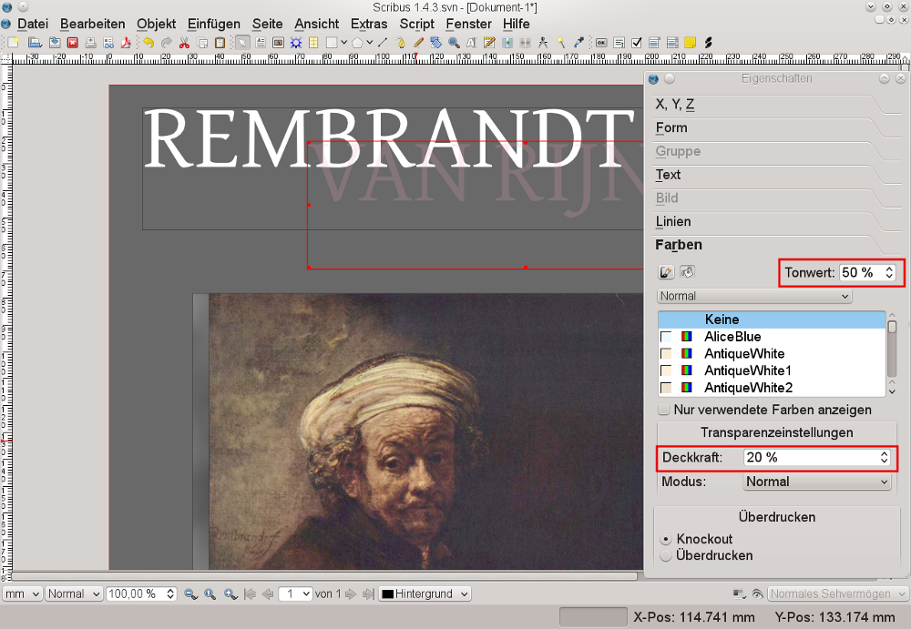 |
Nun benötigen wir noch drei weitere Textrahmen, in die wir als Text »1606«, »2006« sowie »Painting the Dutch Golden Century« hineinschreiben. Für alle drei sollte man die Schriftart Gentium verwenden. Dabei benötigen wir eine Schriftgröße von 53 pt für die Zahlen und von 31 pt für den Textteil. Die Farbauswahl sollte etwa der in der Abbildung entsprechen – die entsprechenden Einstellungen vorzunehmen, sollte Ihnen nun nicht mehr schwerfallen. Und achten Sie einmal darauf, daß das Design trotz der verschiedenen Größen und Farben einen gefälligen Eindruck macht, weil wir für alle Textelemente dieselbe Schriftart verwendet haben. Dies kann man sich für künftige Projekte merken.
 |
Um die Gestaltung der Titelseite abzuschließen, zeichnen wir nun eine gerade Linie. Dazu klickt man auf die Schaltfläche »Linie einfügen« in der Symbolleiste und zieht die Maus von links nach rechts über die Seite, während man gleichzeitig die Strg-Taste gedrückt hält, um die Linie exakt horizontal zu positionieren. Anschließend öffnet man die Palette »Eigenschaften« und dort die Ansicht »Linien«. Hier kann man zunächst verschiedene Breiten ausprobieren, um dann zur Ansicht »Farben« zu wechseln und die Liste mit den Linienfarben anzuzeigen (Schaltfläche mit dem Pinsel). Hier wählen wir schließlich »WhiteSmoke« als Farbe aus.
Danach plazieren wir diese Linie genau zwischen den Textrahmen »1606« und »2006«.
Als Abschluß möchten wir den Verleger angeben und sein Logo einfügen. Unsere entsprechende Firma nennen wir in aller Bescheidenheit »Scribus Publishing«. Für unseren Zweck bedeutet dies, daß wir uns nicht wegen eines Logos den Kopf zerbrechen müssen, sondern einfach das von Scribus verwenden. Es befindet sich im Verzeichnis ~/share/scribus/icons, wobei die Tilde für das Installationsverzeichnis von Scribus steht. Der entsprechende Dateiname ist scribus.png.
Fügen Sie nun am unteren Rand der Seite einen kleinen Bildrahmen ein, zwischen dem Seitenrand und dem Rahmen für die Abbildungen. Dabei sollten Sie darauf achten, daß als Füllfarbe »Keine« verwendet wird, denn die importierte Grafik verfügt über einen transparenten Hintergrund. Wie schon zuvor wird die Datei mit einem Klick der rechten Maustaste importiert, indem man im Kontextmenü Bild laden… auswählt. Um zu verhindern, daß die Farben mit denen unseres Layouts in Konflikt geraten, rufen Sie den Dialog für die Bildeffekte auf, so wie oben unter »Schritt Zwei« beschrieben. Indem wir die Grafik nun in Graustufen verwandeln und gleichzeitig den Kontrast erhöhen, können wir sicherstellen, daß das Logo nicht mit dem Hintergrund verschmilzt und auch farblich nicht mit dem Rest kollidiert.
| 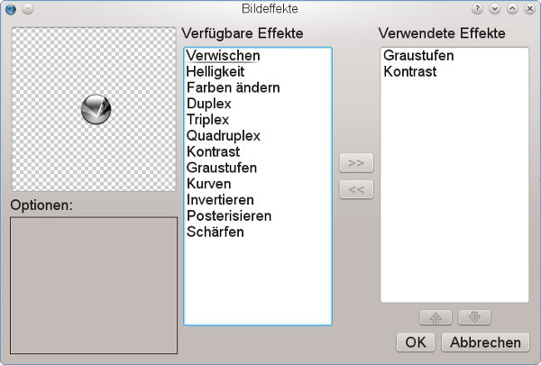 |
Um den Verlagsnamen hinzufügen, erzeugen Sie zunächst an einer beliebigen Stelle einen Textrahmen und vergeben hierfür im Reiter »X, Y, Z« in der Palette »Eigenschaften« den Namen »ScribusPublishing«. Als Text geben Sie dann »Scribus Publishing« ein, und als Schriftart wählen Sie »Bitstream Vera Sans«, mit der Größe 13 pt und in der Farbe »Grey97«.
Zum Schluß muß man den Text nur noch um 90 Grad drehen. Dies kann man wiederum im Reiter »X, Y, Z« der genannten Palette erledigen. Geben Sie dazu einfach unter »Drehung« den Wert »90°« ein:
| 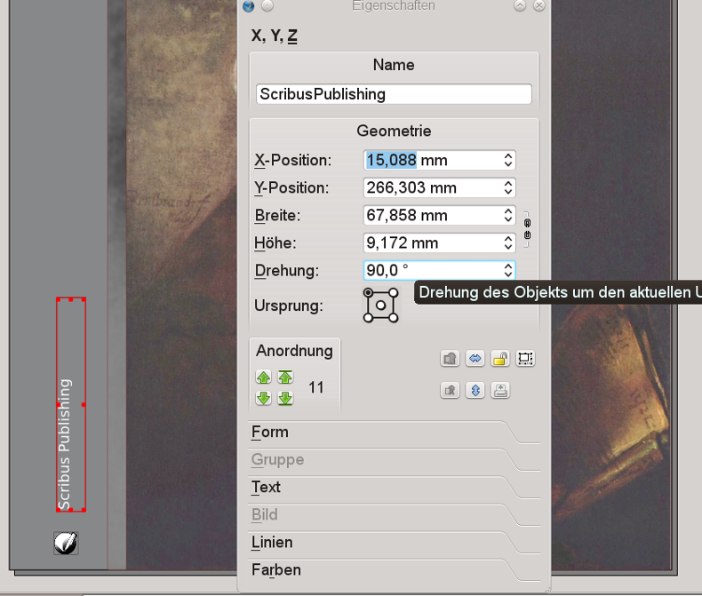 |
Nun kann man den Textrahmen mit der Maus an eine Position oberhalb des Scribus-Logos verschieben. Wählen Sie zum Abschluß Datei > Speichern, und vergeben Sie einen passenden Dateinamen. Sobald Sie auf »OK« geklickt haben, ist Ihr erstes Scribus-Dokument fertiggestellt! Wie man sieht, ist es nicht wirklich schwierig.
|